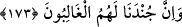

172. Onlar mutlaka zafere ulaşacaklardır.
Yalnız “Onlar mutlaka zafere ulaşacaklardır.” Buna göre bizim kendisini
aşağıladığımız asla üstün gelemeyeceği gibi bizim kendilerine yardım ettiğimiz de asla
mağlup olmaz.
173. Bizim ordumuz şüphesiz üstün gelecektir.
“Bizim” peygamberlerden ve onlara tâbi olan mü’minlerden oluşan “ordumuz” bazen
mağlup oldukları görülse de dünya ve ahirette düşmanlarına “şüphesiz üstün
gelecektir.” Zira sonuç onlarındır, hüküm galibe göredir, nadir olan yok gibidir.
Komutana, devlet başkanına muhalefet etmek yahut dünyaya tamah etmek yahut kendini
beğenme gurur ve kibir yapma ve benzeri ârızî bir durumdan dolayı yaşanan mağlubiyet,
bizzat hüküm ve karar verilmiş olan yardım sözünü etkilemez. Yardıma mazhar olmak,
yalnız mü’mine yaraşır bir şereftir. Kâfirin durumu ise tedrici olarak yavaş yavaş
ilerleyip yükseliyor (istidrâc) gibi olsa da sonu ebedi hüsrandır. Bazıları der ki burada
yardımdan maksat, bildiğimiz yardım ve zafer değildir. Bilakis buradaki yardımdan
maksat, delildir (huccet). Zira hak bâtıldan kılıçla değil; delil ile ayrılır. İşte Allah
Teâlâ bununla delil ile yardım görmenin -tavır ve asırlar farklı olsa da- peygamberlerin
ümmetleri üzerine olan üstünlükleri olduğunu göstermek istemiştir.
Hasan-ı Basrî (rh.a.) der ki: “Allah Teâlâ burada doğrudan yardım ve zaferi murad
etmiş; delili murad etmemiştir. “Ben şu ana kadar hiçbir peygamberin savaşta
öldürüldüğünü duymadım” der. Fakir (Bursevî) der ki: Hasan-ı Basrî burada harp ile
memur olan mutlaka yardım görür ve zafer elde eder, demek istemiştir. Ancak harp ve
savaşla memur olmayan böyle değildir. İşte bu yorum, Allah Teâlâ’nın “Bu musibetler
(onların başına), Allah’ın âyetlerini inkâra devam etmeleri, haksız olarak
peygamberleri öldürmeleri sebebiyle geldi. Bunların hepsi, sadece isyanları ve
taşkınlıkları sebebiyledir” (el-Bakara 2/61) “Allah’ın âyetlerini inkâr edenler,
haksız yere peygamberlerin canlarına kıyanlar ve adaleti emreden insanları
öldürenler (yok mu), onlara acı bir azâbı müjdele!” (Ali İmran 3/21) ve “Çünkü
onlar, Allah’ın âyetlerini inkâr ediyorlar ve haksız yere peygamberleri
öldürüyorlardı. Bu da, onların isyan etmiş ve haddi aşmış bulunmalarındandır”
(Âl-i İmran 3/112) âyetleri ve benzerleri, bu âyet ile emsâl âyetler arasını
bağdaştırmaktadır.
Hülasa ihlasa erdirilmiş (muhlas) mü’minlere yardım edilir ve onlar galib gelirler.
Zira galib ve aziz olan Mevla Teâlâ hazretlerine güvenip dayanan elbette mansur,
muzaffer ve galib olacaktır. Onların düşmanları ise hezimete uğrayıp mağlup ve perişan
olacaklardır. Zira Allah Teâlâ’dan başkasına güvenip dayananlar, özellikle taşlardan